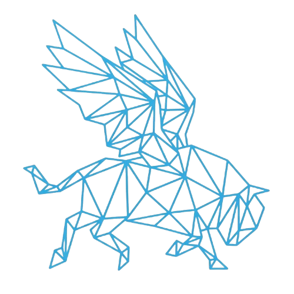

Connections between rare diseases are scattered across papers and databases, and they rarely say how well they are supported. A patient-group leader like Maria cannot easily tell which diseases share her disease's mechanism, what work already exists, or whom to approach. TFOTB turns literature and reference data into links between diseases, genes, symptoms and mechanisms. Every link keeps its source, and it helps plan the experiment that would test a lead. Research support only; not a clinical system.
/10x)Milestone (the brief's “What good looks like”): Maria approaches a partner with a sourced proposal for shared research. The page runs her journey live, then compares the typical way with TFOTB.
| Person | Typical way | With TFOTB | × |
|---|---|---|---|
| Maria (4 steps) | 30 working days | 11 working hours | ~22× |
| Devon | 3 days | 0.5 h | ~48× |
| Priya (partly built) | 40 days (“months”, from the brief) | 8 h | ~40× |
| Dr. Osei (partly built) | 10 days | 2 h | ~40× |
Measured: the product side. All five calls of Maria's journey take a median of 2.5 s on the live app (10 runs), and a fixed 7-item answer checklist passes 7 of 7. Not measured: the typical way. Those times are editable assumptions (only Priya's comes from the brief), and the TFOTB time in the table is a person checking sources. No person has been timed yet; a protocol is written (docs/TIMING_STUDY.md) and the page shows people's timings once they exist. Stress test: if checking takes 3× as long, Maria falls to about 7×, and 10× is lost beyond 2.2×. A second section models the lab step after the proposal: about 6× in a lab with its own robot, 12× for a group waiting on a shared one.
To validate next: time 3 to 5 real people on the same tasks against one quality rubric; run a real plate reader; measure real turnaround in two or three labs.
From git: first commit 2026-10-03 12:01 PDT, latest 2026-10-04 04:24 PDT, 125 commits. Work before the first commit is not recorded; the hour-by-hour split is UNVERIFIED.